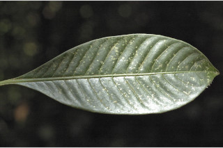
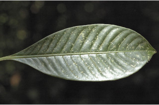

Shrubs or small trees ca. 4 m tall.
ಪೊದೆಗಳು ಅಥವಾ ಅಂದಾಜು 4 ಮೀ. ಎತ್ತರದವರೆಗಿನ ಸಣ್ಣ ಗಾತ್ರದ ಮರಗಳು.
Shrubs or small trees ca. 4 m tall.
குத்துச்செடி அல்லது சிறிய மரம் 4 மீ. உயரம் வரை வளரக்கூடியது.
Young branchlets subterete, compressed, glabrous.
ಎಳೆಯ ಕಿರುಕೊಂಬೆಗಳು ಉಪ ದುಂಡಾದ ಆಕಾರದಲ್ಲಿದ್ದು,ಸಂಕುಚಿತವಾಗಿದ್ದು ರೋಮರಹಿತವಾಗಿರುತ್ತವೆ.
Young branchlets subterete, compressed, glabrous.
சிறியநுனிக்கிளைகள் குறுக்குவெட்டுத் தோற்றத்தில் வளையமானது, தட்டையானது, உரோமங்களற்றது.
Leaves simple, opposite, decussate; stipule intrapetiolar, broadly ovate and apiculate, sheathing; petiole 0.6-1.8 cm long, planoconvex in cross section, glabrous; lamina 10-16 (-20) x 3.5-6 cm, oblanceolate to obovate, apex acuminate, base cuneate to decurrent, margin entire, glabrous, chartaceous; midrib raised above; secondary_nerves 12-15 pairs, regular, nearly parallel, domatia at axils of secondary_nerves; tertiary_nerves obscure or broadly reticulate.
ಎಲೆಗಳು ಸರಳವಾಗಿದ್ದು ಕತ್ತರಿಯಾಕಾರದ ಅಭಿಮುಖ ಜೋಡನಾ ವ್ಯವಸ್ಥೆಯಲ್ಲಿರುತ್ತವೆ, ಕಾವಿನೆಲೆಗಳು ,ತೊಟ್ಟುಗಳ ನಡುವೆ ಇರುತ್ತವೆ,ವಿಶಾಲ ಅಂಡದ ಆಕಾರದಲ್ಲಿದ್ದು ಅಗ್ರದಲ್ಲಿ ಸೂಕ್ಷ್ಮ ಮುಳ್ಳನ್ನು ಹೊಂದಿರುತ್ತವೆ ಹಾಗೂ ಒರೆಯ ಸಮೇತವಿರುತ್ತವೆ;ತೊಟ್ಟು 0.6 – 1.8 ಸೆಂ.ಮೀ.ವರೆಗಿನ ಉದ್ದವಿದ್ದು, ಅಡ್ಡ ಸೀಳಿದಾಗ ಸಪಾಟ ಪೀನ ಮಧ್ಯದ ಆಕಾರ ಹೊಂದಿದ್ದು, ರೋಮರಹಿತವಾಗಿರುತ್ತವೆ;ಪತ್ರಗಳು 10 -16(-20) X3.5 -6 ಸೆಂ.ಮೀ. ಗಾತ್ರ ಹೊಂದಿದ್ದು, ಭರ್ಜಿ-ಬುಗುರಿಯಿಂದ ಬುಗುರಿಯವರೆಗಿನ ಆಕಾರ ಹೊಂದಿದ್ದು, ಕ್ರಮೇಣ ಚೂಪಾಗುವ ತುದಿ, ಬೆಣೆಯಾಕಾರದಿಂದ ತಳಭಾಗಕ್ಕೆ ವಿಸ್ತರಿಸಿದ ಬುಡ, ನಯವಾದ ಅಂಚು ಹೊಂದಿದ್ದು, ಕಾಗದವನ್ನೋಲುವ ಮೇಲ್ಮೈ ಸಮೇತವಿರುತ್ತವೆ;ಮಧ್ಯನಾಳಪತ್ರದಮೇಲ್ಭಾಗದಲ್ಲಿಉಬ್ಬಿರುತ್ತದೆ;ಎರಡನೇದರ್ಜೆಯನಾಳಗಳು12 ರಿಂದ 15 ಜೋಡಿಗಳಿದ್ದು,ಸಾಧಾರಣ ರೀತಿಯದಾಗಿರುತ್ತವೆ,ಹೆಚ್ಚೂ ಕಡಿಮೆ ಲಂಬ ಕೋನಕ್ಕೆ ಸಮಾನಾಂತರ ಅಕ್ಷದ ಲಂಬ ಕೋನಕ್ಕೆ ಸಮಾನಾಂತರದಲ್ಲಿರುತ್ತವೆ; ಎರಡನೇ ದರ್ಜೆಯ ನಾಳಗಳ ಅಕ್ಷಾಕಂಕುಳಿನಲ್ಲಿ ಸೂಕ್ಷ್ಮ ಸಹಜೀವಿ ಗೂಡುಗಳ ಸಮೇತವಿರುತ್ತವೆ;ಮೂರನೇ ದರ್ಜೆಯ ನಾಳಗಳು ಅಸ್ಪಷ್ಟ ಅಥವಾಗಿರುತ್ತವೆ ಮತ್ತು ವಾ ಸ್ಪಷ್ಟವಾಗಿದ್ದ ಪಕ್ಷದಲ್ಲಿ ವಿಶಾಲ ಜಾಲಬಂಧ ನಾಳ ವಿನ್ಯಾಸದಲ್ಲಿರುತ್ತವೆ.
Leaves simple, opposite, decussate; stipule intrapetiolar, broadly ovate and apiculate, sheathing; petiole 0.6-1.8 cm long, planoconvex in cross section, glabrous; lamina 10-16 (-20) x 3.5-6 cm, oblanceolate to obovate, apex acuminate, base cuneate to decurrent, margin entire, glabrous, chartaceous; midrib raised above; secondary_nerves 12-15 pairs, regular, nearly parallel, domatia at axils of secondary_nerves; tertiary_nerves obscure or broadly reticulate.
இலைகள் தனித்தவை, எதிரடுக்கமானவை, குறுக்குமறுக்கானவை; இலையடிச்செதில் காம்புகளுக்கிடையே (இண்ட்ராபீட்டியோலார்) உடையது, அகன்ற முட்டை வடிவானது மற்றும் நீட்சியுடையது, தண்டிற்க்கு உறைப்போன்றது; இலைக்காம்பு 0.6-1.8 செ.மீ. நீளமானது, குறுக்குவெட்டுத் தோற்றத்தில் பிளேனோகான்வக்ஸ், உரோமங்களற்றது; இலை அலகு 10-16 (-20) X 3.5-6 செ.மீ., தலைகீழ் ஈட்டி வடிவானது முதல் தலைகீழ் முட்டை வடிவானது, அலகின் நுனி அதிக்கூரியது, அலகின் தளம் ஆப்பு வடிவானது முதல் டெக்கரண்ட், அலகின் விளிம்பு முழுமையானது, உரோமங்களற்றது, சார்ட்டோசியஸ்; மையநரம்பு மேற்புறத்தில் அலகின் பரப்பைவிட உயர்ந்து இருக்கும்; இரண்டாம் நிலை நரம்புகள் 12-15 ஜோடிகள், கிட்டதட்ட இணையானவை, டொமேசியா நரம்புகளின் கோணங்களில் உடையது; மூன்றாம் நிலை நரம்புகள் மற்றும் பிற நரம்புகள் கண்களுக்கு புலப்படாது அல்லது அகன்ற வலைப்பின்னல் போன்றவை.
Inflorescence small heads on whorled branches of peduncled cymes; flowers sessile.
ಪುಷ್ಪಮಂಜರಿಗಳು ಚಿಕ್ಕ ಗಾತ್ರದ ಚೆಂಡು ಮಾದರಿಯಲ್ಲಿದ್ದು ವೃಂತವುಳ್ಳ ಮಧ್ಯಾರಂಭಿ ಮಂಜರಿಗಳ ಸುತ್ತು ಜೋಡನೆಯ ಕವಲುಗಳ ಮೇಲಿರುತ್ತವೆ;ಹೂಗಳು ತೊಟ್ಟುರಹಿತವಾಗಿರುತ್ತವೆ.
Inflorescence small heads on whorled branches of peduncled cymes; flowers sessile.
மஞ்சரி சிறியவை, சீரமஞ்சரி போன்றது, மஞ்சரி காம்புடைய சைம் வகை; மலர்கள் காம்பற்றது.
Drupe, white, ellipsoid to 0.8 cm across, with two planoconvex pyrenes; seeds 1 per pyrene.
ಡ್ರೂಪ್ಗಳು ಬಿಳಿಬಣ್ಣದಲ್ಲಿದ್ದು ಅಂಡವೃತ್ತದ ಆಕಾರದಲ್ಲಿದ್ದು 0.8 ಸೆಂ.ಮೀ.ವರೆಗಿನ ಉದ್ದವಿದ್ದು ಸಪಾಟ ಪೀನ ಮಧ್ಯದ ಆಕಾರದ 2 ಪೈರೀನುಗಳನ್ನೊಳಗೊಂಡಿರುತ್ತವೆ; ಪ್ರತಿ ಪೈರೀನಿನಲ್ಲಿ 1 ಬೀಜವಿರುತ್ತದೆ.
Drupe, white, ellipsoid to 0.8 cm across, with two planoconvex pyrenes; seeds 1 per pyrene.
உள்ளோட்டுத்தசைகனி (ட்ரூப்), வெள்ளை நிறமானது, நீள்வட்ட வடிவானது, 0.8 செ.மீ. குறுக்களவுடையது, 2 பைரீன் உடையது; ஒவ்வொரு பைரீனிம் ஒர் விதையுடையது.
 
